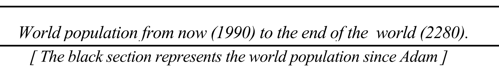
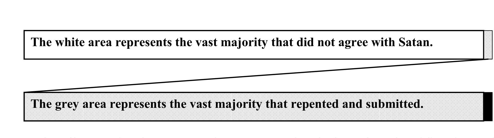

In the name of God, Most Gracious, Most Merciful
This is God’s final message to humanity. All of God’s prophets have come to this world, and all the scriptures have been delivered. The time has come to purify and consolidate all the messages delivered by God’s prophets into one message, and to proclaim that henceforth, there is only one religion acceptable to God, “Submission” (3:19, 85). “Submission” is the religion whereby we recognize God’s absolute authority, and reach an unshakeable conviction that God ALONE possesses all power; no other entity possesses any power that is independent of Him. The natural result of such a realization is to devote our lives and our worship absolutely to God ALONE. This is the First Commandment in all the scriptures, including the Old Testament, the New Testament, and this Final Testament.
Hear, O Israel! The Lord our God is One God!
Therefore you shall adore the Lord your God
with all your heart,
with all your soul,
with all your mind,
and with all your strength. [Deuteronomy 6:4-5, Luke 12:29-30, Quran 3:18]
Let us meditate on God, His glorious attributes,
who is the basis of everything in this universe as its Creator,
who is fit to be worshiped as Omnipresent, Omnipotent, Omniscient
and self existent conscious being,
who removes all ignorance and impurities from the mind
and purifies and sharpens our intellect. [Gayatri Mantra, Yajur Veda]
While every religion has been corrupted by innovations, traditions, and false, idolatrous doctrines, there may be “Submitters” within every religion. There may be Submitters who are Christian, Jewish, Muslim, Hindu, Buddhist, or anything else. These Submitters, collectively, constitute the only religion acceptable to God. As emphasized by the theme on the front page of this book, all Submitters who are devoted to God ALONE, and do not set up any idols beside God, are redeemed into God’s eternal kingdom (2:62). A criterion of the true submitters is that they will find nothing objectionable in the Quran.
With the advent of this Testament, God’s message to the world is now complete. We have now received the long awaited answers to our most urgent questions—who we are, the purpose of our lives, how we came into this world, where do we go from here, which religion is the right one, was it evolution or creation, etc.
xiii
Some may wonder: “Why did God wait all this time to perfect and consolidate His message? What about all the people since Adam who did not receive the complete scripture?” Bearing in mind that the Quran answers this question in 20:52, it is a matter of simple statistics that the world’s population from the beginning until now did not exceed 7,000,000,000. From now to the end of the world, 2280 A.D. (Appendix 25), it is estimated that the total world population will exceed 75,000,000,000. Thus, the vast majority of people are destined to receive God’s purified and consolidated message (see diagram).

It all began billions of years ago when one of God’s high-ranking creatures, Satan, developed a supercilious idea that he could run a dominion as an independent god besides God. This challenge to God’s absolute authority was not only blasphemous, it was also erroneous. Satan was ignorant of the fact that God alone possesses the ability to be a god, and that there is much more to godhood than he realized. It was the ego—arrogance augmented by ignorance—that led Satan to believe that he could take care of a dominion, as a god, and run it without disease, misery, war, accidents, and chaos. The vast majority of God’s creatures disagreed with Satan. Yet, the minute egotistic minority that agreed with him to various extents were in the billions. Thus, a profound dispute erupted within the Heavenly Community (38:69). The rebels’ unjustifiable challenge to God’s absolute authority was met and resolved in the most efficient manner. After giving the rebels sufficient chances to denounce their crime and submit to Him, God decided to exile the hard core rebels on a space ship called Earth, and give them yet another chance to redeem themselves.
If you claim that you can fly a plane, the best way to test your claim is to give you a plane and ask you to fly it. This is precisely what God decided to do in response to Satan’s claim that he could be a god; God appointed him a temporary god on the tiny speck Earth (2:30, 36:60). As for those who agreed with Satan, they were given a chance to kill their egos and submit to God’s absolute authority. While the vast majority of the guilty creatures took advantage of this opportunity, a minuscule minority consisting of about 150 billion creatures failed to take advantage of this offer (33:72).
xiv

The dispute in the Heavenly Community led to the classification of God’s creatures into different categories:
Creatures who never questioned God’s absolute authority were classified as angels; they knew that God alone possesses the ability and qualifications to be a god. The vast majority of God’s creatures—countless numbers—belong in this category. The number of the angels is so enormous, even the angels do not know how many of them there are; only God knows their number (74:31).
Although the angels suggested that the rebels and their leader should be exiled from God’s kingdom (2:30), the Most Merciful willed to give the rebels a chance to denounce their crime, repent, and submit to His absolute authority (33:72). As represented in the diagram above, the vast majority of the rebels took advantage of God’s gracious offer to re-enter His kingdom. They agreed to kill their egos, come to this world to perform a submissive role, as an expiation for their blasphemy. In return for their submissive role in this world, these creatures are redeemed back to God’s eternal kingdom (6:38). The horse, the dog, the tree, the sun, the moon, the stars, as well as deformed and retarded children are among the intelligent creatures who denounced their crime and repented:
Do you not realize that
to God prostrates everything
in the heavens and the earth;
the sun, the moon, the stars,
the mountains, the trees, the animals,
as well as many people?
Many people, however, are destined for retribution. (22:18)
The stars and the trees prostrate. (55:6)
The horse has no ego. The horse’s owner can be rich or poor, tall or short, fat or thin, young or old, and the horse will serve them all. The dog has no ego; it will wag its tail to its owner, no matter how rich or poor the owner might be. The sun rises and sets every day at precisely the times prescribed by God. The moon follows its synchronized orbit around the earth, without the slightest deviation. The human body—a temporary garment—belongs to the Earth; as such, it is a submitter. The heart, lungs, kidneys, and other organs, perform their functions without our control.
xv
The hard-core rebels—humans and jinns—refused to denounce their crime, and opted for witnessing a demonstration of Satan’s claim. These egotistic creatures who failed to submit to God’s absolute authority, even when offered a chance to do so, were divided in half. The half that were less convinced of Satan’s point of view became classified as humans. Although they harbored doubts about Satan’s claim, they failed to make a firm stand regarding God’s absolute authority. It is the ego that prevented these creatures from appreciating God’s omnipotence, it is the ego that prevented them from submitting when such an opportunity was offered to them (33:72), and it is the ego that stands between most of us and redemption to God’s kingdom (25:43). This is why “Kill your ego” is one of the first commandments in the Quran (2:54).
The other half of the guilty creatures, those who leaned closer to Satan’s point of view and exhibited the biggest egos, became classified as jinns. It was God’s plan to assign one jinn to every human being from birth to death. The jinn companion represents Satan and constantly promotes his point of view (50:23, 27). Both the jinns and the humans are given a precious chance in this world to re-educate themselves, denounce their egoism, and redeem themselves by submitting to God’s absolute authority. Whenever a human being is born, a jinn is born and is assigned to the new human. We learn from the Quran that the jinns are Satan’s descendants (7:27, 18:50). When a jinn being is born and assigned to a human being, the jinn remains a constant companion of the human until the human dies. The jinn is then freed, and lives on for a few centuries. Both humans and jinns are required to worship God alone (51:56).
The dispute in the Heavenly Community as stated in 38:69 and described above proves that God’s creatures possess the freedom of choice; they have minds of their own. The rebellion of a minuscule minority among God’s creatures has served to emphasize the wonderful fact that God’s creatures serve Him because they appreciate His infinite magnificence. Without the rebellion, we would have never known that freedom is God’s gift to His creatures.
Even in our worldly dimension, any enterprise expects its employees to be loyal and devoted to the welfare of the enterprise. If an employee is not totally dedicated to the enterprise, or is shown to have divided loyalties, he is immediately dismissed. Since the humans and the jinns sided with Satan, then turned down God’s offer to reconsider their rebellious acts, the angels expected Satan and his allies to be banished from God’s kingdom (2:30). It was immense mercy from God that He granted us this additional chance to denounce our crime and redeem ourselves.
To carry out this extremely merciful plan of redemption, God “created death” (67:1-2). The divine plan called for bringing the rebels into another existence, where they have no recollection of the heavenly feud. Under the circumstances of this life, the humans and the jinns receive both God’s messages and Satan’s messages, then freely choose either side. Based on their freewill decision, they are either redeemed to God’s kingdom, or become permanently exiled with Satan.
xvi
To emphasize the utter insignificance of Satan’s projected dominion, God created a billion galaxies, a billion trillion stars, within a vast universe that spans billions of light years. If we travel towards the sun (93,000,000 miles) at the speed of light, we will reach it in eight minutes. If we keep going, we will reach the border of our Milky Way Galaxy after 50-70,000 years at the speed of light. To reach the nearest galaxy, it will take us 2,000,000 years at the speed of light, and there are at least 2,000,000,000 galaxies in “our universe.” With the most powerful telescopes, the earth is utterly invisible from the edge of our own galaxy, let alone from the edge of our universe. As if our universe were not vast enough, God created six more, even larger universes surrounding our universe (2:29, 67:3). God then informed Satan that a tiny mote within the smallest and innermost universe, the planet Earth, shall be his dominion. God’s plan called for placing the humans and jinns in a universe that cannot stand His physical presence (7:143). Thus, Satan rules his minute kingdom far from the physical presence of God, though with God’s full knowledge and control. It should also be noted that the number of rebels who repented was so vast, that the planet earth could not possibly accommodate all of them. As it is, the animals vastly outnumber the humans on this planet. It would take an unmanagable earth to accommodate all the repentant rebels. Hence the placement of uncountable decillions of creatures in outer space.
The body of the first human being was shaped on earth by God’s angels, in accordance with God’s instructions (7:11). God then assigned the first person, Adam, to that body. When God informed the angels that they will be serving the humans throughout the test period—guarding them, driving the winds, distributing the rain and provisions, etc.—Satan was the only one who refused to “fall prostrate” (2:34, 15:31, 38:74). Adam’s mate was cloned, with feminine features, from Adam, and God assigned the second human being to her body. While the empty (soulless) bodies of Adam and Eve remained here on earth, their souls, the real persons, resided in Heaven. Adam and Eve remained in Heaven for as long as they upheld God’s commandments. Once they listened to Satan instead, they reflected a flawed human nature in all of us, and they immediately belonged to Satan’s dominion down on Earth—“their bodies became visible to them” (7:20, 20:121). The rest is history.
Putting the jinns and the humans to the test stipulated that Satan shall reproduce whenever a human being is born. As mentioned above, every time a human being is born, a jinn being is born to serve as a constant companion of the human person. Every human being is subjected to the incessant persuasions of Satan’s representative who lives in the same body from birth to death. Satan’s representative tries to convince the human companion of Satan’s point of view: that God alone is not enough. On the Day of Judgment, the jinn companion serves as a witness against the human counterpart (43:38; 50:23,27). Many jinn companions are converted to God’s point of view by the human companions.
xvii
God did not leave the human being without preparation. To help the humans in their final chance to reconsider their blasphemy, every person is born with instinctive knowledge that God ALONE, and no one else, is our Lord and Master (7:172-173). The jinns were not given this instinctive knowledge, but they are given a much longer life span and greater abilities to study God’s signs throughout the innermost universe. Since they represent Satan’s point of view, their instinctive nature leans strongly in favor of polytheism. In addition to our built-in instinct to worship God alone, God sent messengers to help us redeem ourselves. With all these elements in view, we can appreciate the fact that the only unforgivable offense (if maintained until death) is idol worship: believing that anyone besides God possesses any power.
The human being is given forty years to study, look around, reflect, and examine all points of view before making this most important decision—to uphold Satan’s point of view, or God’s absolute authority. Anyone who dies before the age of forty is chosen by God for redemption due to circumstances known only to God. Anyone who dies before the age of 40 goes to Heaven (46:15, Appendix 32). God’s immense mercy is evident from the fact that even those who believe in the Quran find it difficult to accept such a compassionate divine law.
God’s messengers delivered the good news of our God-given chance to redeem ourselves, and they were supported by formidable signs. When Moses went to Pharaoh, he was supported by such miracles as the turning of his staff into a serpent. Jesus created live birds from clay by God’s leave, healed the leprous and the blind by God’s leave, and revived the dead by God’s leave. The prophet Muhammad, God’s messenger who delivered this Final Testament, did not exhibit such miracles (10:20). The Quran itself was the miracle supporting Muhammad’s mission (29:50-51). It was divine wisdom that separated the Miracle of the Quran from Muhammad by 14 centuries. Now that we understand the momentous dimensions of the Quran’s mathematical miracle (Appendix 1), we realize that millions of people would have worshiped Muhammad as God incarnate if this Miracle were revealed through him.
With the advent of the computer age, we discover that the Quran’s mathematical code is “One of the great miracles” as stated in 74:30-35. While the miracles given to previous messengers were limited in time and place, the Quran’s miracle is perpetual. Only a few people witnessed the miracles of Moses and Jesus, but the Quran’s miracle can be witnessed by anyone at any time. Furthermore, the Quran’s miracle documents and proves all the previous miracles (5:48).
xviii
As detailed in Appendix 1, the Quran’s mathematical miracle is based on the number “19.” To share this awesome miracle with the reader, the word “GOD” is printed throughout the English text in bold capital letters and the cumulative number of occurrences is shown at the lower left corner of every page. The total occurrence of this most important word is shown at the end of the Quran to be 2698. This total is a multiple of 19. Additionally, when we add the numbers assigned to every verse where the word “God” occurs, the total comes to 118123, also a multiple of 19 (19x6217). The cumulative sum of verse numbers where the word “God” occurs is shown on the lower right corner of every page. These simple physical facts are easily verifiable by the reader, and they suffice to prove the super-human nature of the Quran’s mathematical composition.
Total Count of the Word “God” Total Sum of Verse Numbers
(Shown at the lower left corner of every page) (Shown at the lower right corner)
2698 (19x142) 118123 (19x6217)
In addition to the Quran’s extraordinary mathematical composition, we find a large number of Quranic facts which are proven or theorized by modern science. Here are a few examples of such advance scientific information:
1. The earth is egg-shaped (39:5, 79:30).
2. The earth is not standing still; it moves constantly (27:88).
3. The sun is a source of light, while the moon reflects it (10:5, 25:61, 71:16).
4. The proportion of oxygen diminishes as we climb towards the sky (6:125).
5. The “Big Bang Theory” is confirmed (21:30).
6. The “Expansion of the Universe Theory” is confirmed (51:47).
7. The universe started out as a gaseous mass (41:11).
8. Evolution is a fact; within a given species, evolution is a divinely guided process (21:30, 24:45, 32:7-9, 18:37, 15:28-29, 7:11, 71:13-14, Appendix 31).
9. The man’s seminal fluid decides the baby’s gender (53:45-46).
Equally miraculous is the absence of any nonsense in the Quran. This is particularly significant in view of the dominance of ignorance and superstition at the time of revelation of the Quran. For example, the most respected exegesis among the traditional Muslims is that of Ibn Kathir. In this famous reference, written centuries after the Prophet, we read that the earth is carried on 40,000 horns of a giant bull, who stands on top of a giant whale (see Ibn Kathir’s interpretation of Verse 68:1).
xix
As recently as 1975, and in the same location where the Quran was revealed, the president of the Islamic University of Medina, Saudi Arabia, Sheikh Abdul Aziz Ben Baz, declared that the earth is flat and standing still (see insert)!!
Translation from Ben Baz' book, Page 23: “If the earth is rotating as they claim, the countries, the mountains, the trees, the rivers, and the oceans will have no bottom and the people will see the eastern countries move to the west and the western countires move to the east.”
One of the most elusive objectives of every human being is “Happiness.” The Quran reveals the secret of attaining perfect happiness in this life and forever. We learn from the Quran that happiness is an exclusive quality of the soul. Thus, a body that attains all the material successes it longs for—money, power, fame, etc.—often belongs to an unhappy person. Happiness depends totally on the degree of growth and development attained by the soul, the real person. The Quran provides a detailed map towards perfect happiness for both body and soul, both in this world and in the eternal Hereafter (Appendix 15).
In numerous verses throughout this proven Testament, God personally guarantees the believers’ happiness, now and forever:
Absolutely, God's allies will have nothing to fear,
nor will they grieve.
They are those who believe
and lead a righteous life.
For them happiness in this life, and in the Hereafter.
Such is God's inviolable law.
This is the true triumph. [10:62-64]
As expected from the Creator’s final message, one of the prominent themes in the Quran is the call for unity among all believers, and the repeated prohibition of making any distinction among God’s messengers. If the object of worship is one and the same, there will be absolute unity among all believers. It is the human factor, i.e., devotion and prejudice to such powerless humans as Jesus, Muhammad, and the saints that causes division, hatred, and bitter wars among the misguided believers. A guided believer is devoted to God ALONE, and rejoices in seeing any other believer who is devoted to God ALONE, regardless of the name such a believer calls his or her religion.
xx
Surely, those who believe,
those who are Jewish,
the Christians,
and the converts;
anyone who
(1) believes in God,
(2) believes in the Last Day, and
(3) leads a righteous life,
will receive their recompense from their Lord;
they have nothing to fear, nor will they grieve. [2:62, 5:69]
As detailed in Appendix 2, the publication of this book marks the advent of a new era – the era where God’s messages, delivered by all His prophets, are consolidated into one. God’s one and only religion, “Submission,” shall dominate all other religions (9:33, 48:28, and 61:9). Today’s corrupted religions, including Judaism, Christianity, Hinduism, Buddhism, and Islam, will simply die out, and “Submission” will prevail. This is not the wishful thinking of a human being or a collection of humans; this is God’s inviolable law (3:19, 9:33, 41:53, 48:28, 61:9, 110:1).
Rashad Khalifa
Tucson
Ramadan 26,1409*
* The final draft of the first printing was completed on the Night of Destiny 1409. If we add the day, month, and year of this date, we get 1444, or 19x19x4. [Ramadan 26,1409: 9 + 26 + 1409 = 1444.]
xxi